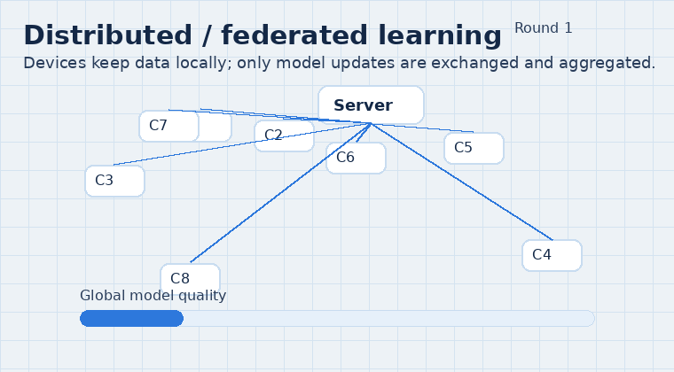
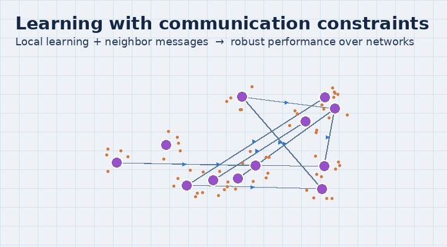

Distributed learning
Our learning direction focuses on reinforcement learning (RL) and meta-learning for decision-making and adaptive control, with an emphasis on networked and multi-agent systems.

What this field is about
- Reinforcement learning: learn a policy π(a|s) by interacting with an environment and maximizing long-term return.
- RL for control: data-driven controllers for tracking, stabilization, and planning under uncertainty and constraints.
- Multi-agent / networked RL: coordination and communication among agents (e.g., formation, coverage, and distributed decision-making).
- Meta-learning: learn a good initialization or update rule so a policy/controller adapts to a new task with only a few samples or gradient steps.
- Key themes: safety & stability, sample efficiency, and generalization across tasks and operating conditions.
Illustrations

Reinforcement learning (RL)
Agent–environment interaction, policy improvement, and a typical learning curve (episode return).

Meta-learning
Meta-training across tasks to obtain an initialization that adapts quickly to a new task (few-shot).
Typical applications
- Learning-based control for robotics and autonomous vehicles (navigation, tracking, manipulation).
- Adaptive decision-making in networked systems (smart grids, smart manufacturing, traffic and mobility).
- Multi-agent coordination: formation, coverage, and task allocation with learned policies.
- Rapid adaptation to changing dynamics or environments via meta-learning (few-shot personalization).
Related reading
- Sutton & Barto. Reinforcement Learning: An Introduction (2nd ed.).
- Finn, Abbeel & Levine. Model-Agnostic Meta-Learning for Fast Adaptation of Deep Networks (MAML), 2017.
- Schulman et al. Proximal Policy Optimization Algorithms (PPO), 2017.
- Haarnoja et al. Soft Actor-Critic: Off-Policy Maximum Entropy Deep Reinforcement Learning, 2018.
- Duan et al. RL^2: Fast Reinforcement Learning via Slow Reinforcement Learning, 2016.
- Hu Wenbo; Fei Chen*; et al. Multi-ASV coordinated tracking via model-reference reinforcement learning control (IEEE TCYB, 2023).
- Fei Chen; Wei Ren. On the Control of Multi-Agent Systems: A Survey (FnT Systems and Control, 2019).
- Multi-agent reinforcement learning survey (select one as a starting point).
Interested in joining? See Openings.